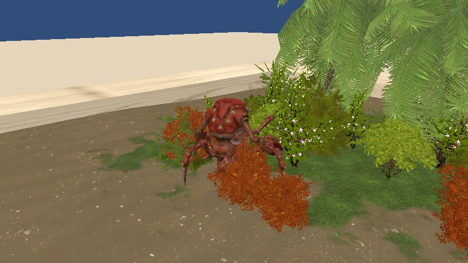

Home / Games / Creature Raising Kit
Raise a creature, and write to strangersCreature Raising Kit

Read the guide below, or load the game when you are ready.
A small island sits inside a box, surrounded by water. A creature walks around on it. You feed it, and over time it stops being the thing it was.
Then there are the letters. Bottles wash up on your beach carrying messages written by other people playing this game, and you can write back. You do not pick who gets your reply. You put it in the water and it goes wherever it goes.
Nothing here is in a hurry. That is the point of it.
At a Glance
| Genre | Idle pet raising, tiny sandbox, anonymous letters |
|---|---|
| Price | Free, no install, no account |
| Platform | Desktop (Chrome / Edge / Firefox / Safari) and mobile |
| Saves | Auto-saved in your browser |
| Online | Anonymous letters exchanged with other players |
| Languages | English and Japanese, switchable in game |
| Built in | About one month |
How to Play
- Open the bait box: it is the glowing box on the sand
- Pick a food: seaweed, small fish, or shell
- Feed your creature: eating pushes its growth along, and once the conditions are met it will eventually change form
- Read the bottles: when one washes up, click the bottle or the postbox
- Write back: any letter can be answered on the spot
- Return it to the sea: sending a read letter back out earns you sea glass, which is what food costs
Feeding
| Seaweed | 1 sea glass. A little growth |
|---|---|
| Small fish | 2 sea glass. Solid growth |
| Shell | 4 sea glass. Large growth |
Meeting the conditions for the next form does not transform your creature on the spot. At some point, while it is quietly going about its day, it molts. The old shell stays behind and something different walks away from it.
That delay is deliberate. I did not want growth to read as a number going up. I wanted you to look back at the island and notice that what is walking around on it is not what was there before.
The Letters
Letters you send reach other people playing the game. This is not a chat and you cannot address anyone. Your words go into the water, wash up somewhere, and if a reply comes it arrives the same way, in a bottle with a red ribbon, whenever it happens to arrive.
Reading a letter and returning it to the sea gives you two sea glass, which is how the letter system feeds back into raising your creature. If you are new and the sea is quiet, some prepared letters will drift in so the island is not empty.
Because these go to strangers, there is a word filter, a limit on how often you can send, and a report button on every letter. Please do not put real names, addresses or contact details in them.
Camera
| Rotate the island | Drag left or right. One finger on mobile |
|---|---|
| Zoom | Mouse wheel, or a two-finger pinch |
| Follow the creature | Click it and the camera moves in and tracks it |
| Reset the view | The RESET button, top right |
Developer's Note
This was going to be a completely different game. The original plan was a creature with a human face, heavily inspired by Seaman: a face visible inside the egg, and that same face carried through every later form.
Two things killed it. The first was rigging. I wanted a sea slug that moved with an insect's twitchiness and I could not get that out of the rig no matter how long I spent on it. The second was more useful to learn: once I built the island in Unity and looked through the actual game camera, I realised players do not spend their time looking at a face in close-up. They spend it watching a small silhouette wander around an island. So the design moved away from the face and towards making growth readable from the way the creature walks and how much space it takes up.
The island took a while too. Early builds were brown ground, brown water and a white egg, and it looked less like a beach than like a prototype aquarium.
The last thing standing between the game and release was the WebGL build, which did not fail politely. Instead of printing an error, Unity Editor itself crashed, twice, at the same point, leaving the output folder empty. It turned out to be a native crash while processing leftover assets and references in the scene rather than anything in the game code. I wrote that whole fight up separately.
The WebGL build crashes behind this game are covered in this development note.
FAQ
- Do the letters really reach other players?
- Yes. You do not choose a recipient. Letters drift and wash up on someone's island, and replies come back the same way, so a fast response is never guaranteed.
- My creature met the conditions but nothing happened.
- Evolution is not instant. It molts at some point while it is calmly living on the island. Feed it, then let it be for a while.
- Can I play on a phone?
- Yes. Landscape is better. One finger rotates the camera, two fingers pinch to zoom. The first load is large, so use Wi-Fi if you can.
- Can my save data be lost?
- Progress is stored in your browser, so clearing site data can erase it. Private browsing may discard it when the session ends, and there is no transfer between devices.
- Is it really free?
- Yes. No install and no account.